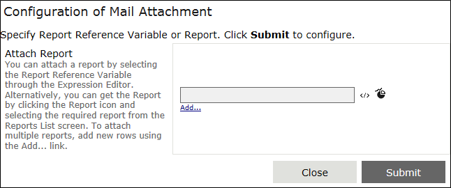

No
You can configure the Attach Reports property for the email activity in this property window.
In the following Attachment Configuration property window, you can configure the Report attachments that you want to mail:

Attach Report
You can use the Attach Report property to attach a report generated by the Report Generator activity within the workflow or to select a report from the list of generated Reports. You can attach a Report by selecting the required Report Reference Variable through the Expression Editor. Alternatively, you can select the report from the Reports List screen which contains already generated reports.
Note: There must be at least one Report Generator activity before an Email activity in the workflow to select the Report Reference Variable (using Expression Editor) as Attachment.
The Report Reference Variable is generated while configuring the Report Generator activity. By default, the report reference variable will be the [Template Name]_[activity Name]. For more information on Report reference Variable, see Configure Report Template.
Complete the following tasks to configure an email attachment: